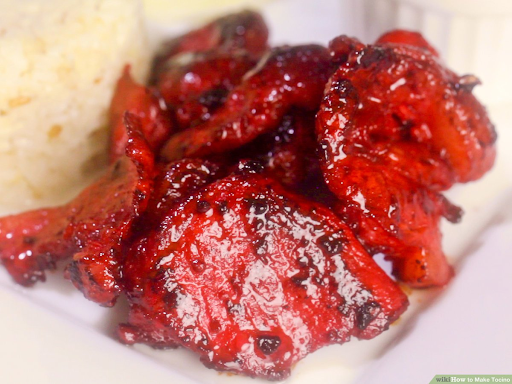

Tocino
from Phillipines

Ingredients:
- 2 pounds pork (butt, shoulder, ham, or belly) - cut into 1/4 inch thin pieces
- 3/4 cup brown sugar
- 1 1/2 tablespoons salt
- 3 cloves garlic - finely minced
- 1 tablespoon soy sauce
- 2 tablespoons rice vinegar
- 1/4 cup fruit juice (pineapple or apple; optional)
- 1/2 tablespoons finely ground black pepper
- 1 tablespoon rice flour
Instructions:
- In a big bowl, combine all ingredients except for the pork slices. Mix until well blended.
- Add the pork and mix using the hand, use hand gloves to avoid stains. Mix for several minutes to an hour.
- Transfer to a container with a cover and let it sit overnight on the counter.
- Mix again for a couple of times before putting in the fridge. Cure for 24 hours or up to 3 days. Can be frozen afterwards and stored longer.
- Boil in about 1-2 cups of water in a pan.
- When the water is almost gone and sauce starts to thicken add in 3-4 tablespoons of oil. (Skip this step if your meat has a high fat content.
- Cook over medium heat until the sauce caramelizes and meat is brown.